L5 // Введение в статистику. Случайный эксперимент и случайные величины
Что будет?
- Генеральная совокупность и выборка
- Ключевые характеристики статистических данных
- Случайный эксперимент и вероятность
- Случайные величины и их распределение
L5.1 // Введение в математическую статистику
Что есть статистика?
Статистика — это междисциплинарная область знаний, а также практической деятельности, изучающая массовые явления, а также прицнипи и методы работы с данными, характеризующими эти явления.
Генеральная совокупность и выборка
Генеральная совокупность (population) — множество всех [существующих] исследуемых объектов и сведений о них.
Объем генеральной совокупности (\(N\)) — число единиц, образующих генеральную совокупность.
Выборка, или выборочная совокупность (sample) — множество объектов генеральной совокупности, объемом \(n\) (\(n \ll N\)).
Репрезентативность выборки
Garbage in, garbage out.
Репрезентативность — степень соответствия характеристик выборки характеристикам генеральной совокупности.
Почему выборка должна быть репрезентативной?
- хотим обобщать результаты нашего исследования, полученные на выборке, на генеральную совокупность
- если выборка нерепрезентативна, то этого сделать нельзя
Как набрать репрезентативную выборку
- Осознать, кто наша генеральная совокупность, так как для каждой генеральной совокупности репрезентативная выборка будет своя.
- Понять, есть ли какая-то группировка, важная для нашего исследования, в нашей генеральной совокупности — социальная страта, специальность образования, сфера работы, пол / гендер, возрастные группы, регион проживания, семейное положение, что-либо ещё.
- Рассчитать достаточный объём выборки. Это не самая простая задача и о ней мы будем говорить отдельно. Пока отметим в назывном порядке, что на объем выборки будут влиять дизайн исследования, изменчивость признака, уровень значимости и размер эффекта [что бы это ни значило].
- Обеспечить случайное попадание респондентов в выборку.
Способы формирования репрезентативной выборки
Простая случайная выборка (simple random sample)
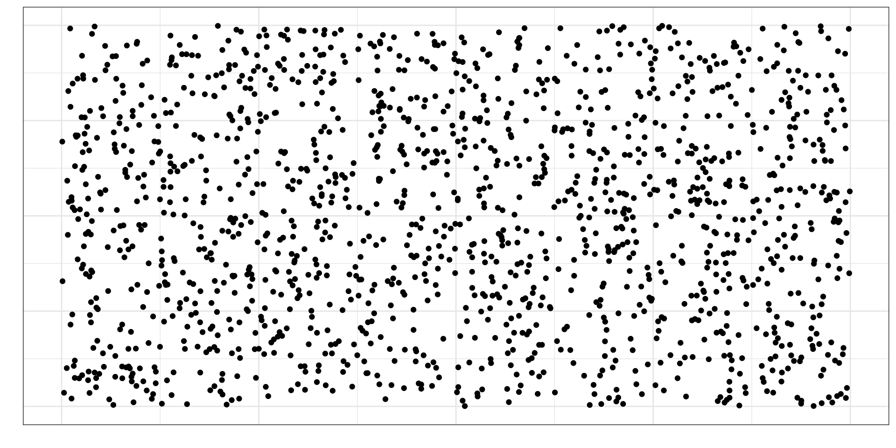Простая случайная выборка (simple random sample)
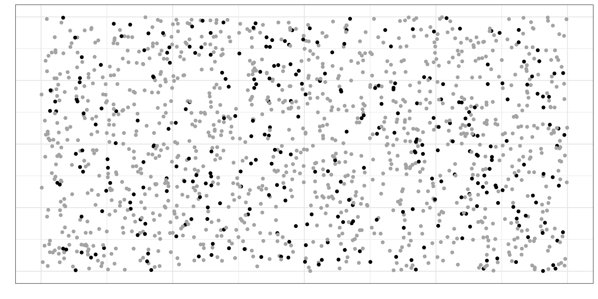Стратифицированная выборка (stratified sample)
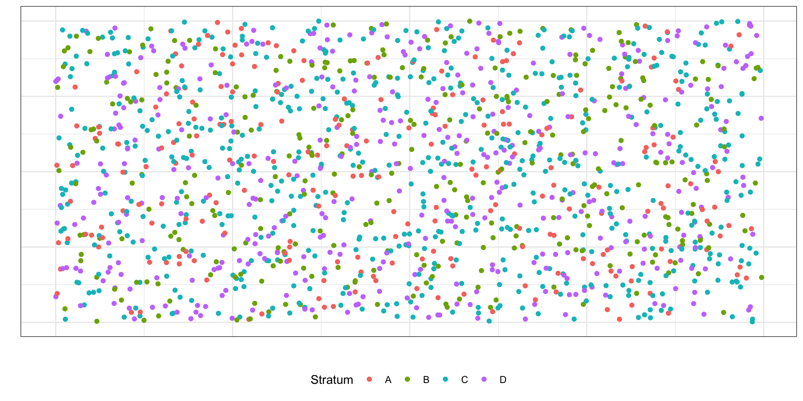Стратифицированная выборка (stratified sample)

Стратифицированная выборка (stratified sample)
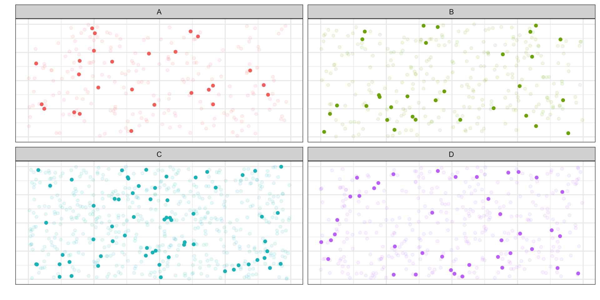Групповая выборка (cluster sample)
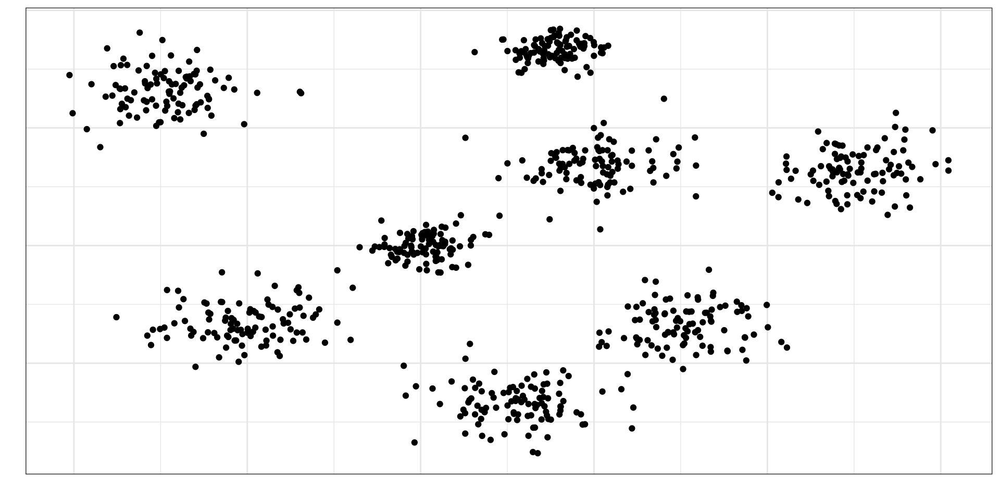Групповая выборка (cluster sample)
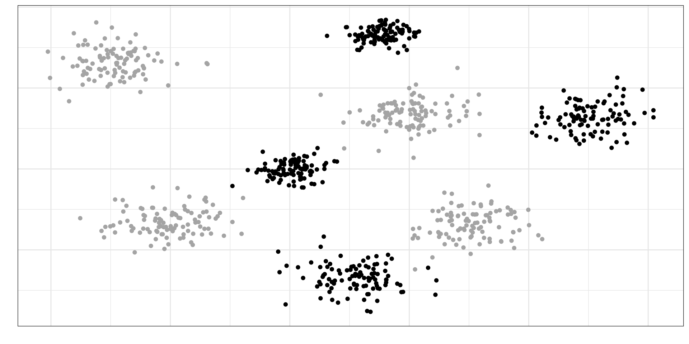Групповая выборка (cluster sample)
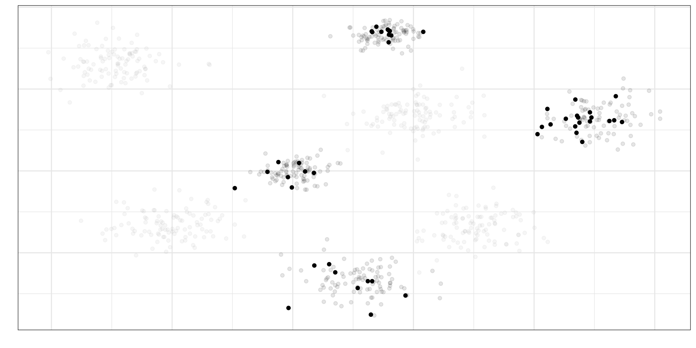Характетистики объектов выборки и генеральной совокупности
- Объекты генеральной совокупности — признаки
- Признаки количественно выражены в показателях
| Признак | Показатель |
|---|---|
| Рабочая память | Объем рабочей памяти |
| Нейротизм | Уровень нейротизма по BFI |
| Доход | Совокупный годовой доход после уплаты налогов |
| Когнитивная нагрузка | Уровень когнитивной нагрузки по ЭЭГ-коррелятам |
| Доверие к ИИ | Уровень доверия к ИИ по опроснику TAIA |
| Индивидуализм/коллективизм | Индекс индивидуализма/коллективизма по модели Хофстеде |
Характетистики объектов выборки и генеральной совокупности
Параметр (\(\theta\)) — относительно постоянная [от одной совокупности к другой] величина, харакретизующая генеральную совокупность по некоторому показателю.
Величина параметра, который мы изучаем, неизвестна. И никогда не будет известна.
Величину параметра мы можем только предсказать с определённой статистической точностью.
Измеряя что-либо на выборке, мы получаем выборочную характеристику, или оценку (\(\hat \theta\)) — эмпирический (измеримый) аналог параметра.
Характеристики статистических данных
Выборки между собой имеют право различаться
Мы не знаем, что мы получим в результате конкретного измерения на конкретном изучаемом объекте
Ни один измерительный инструмент не является совершенным
Неопределённость нам говорит о том, что мы не знаем, что именно мы получим в результате наших измерений для конкретной выборки.
- Отсюда возникнут случайные величины.
Вариативность означает, что наши данные будут различатся от выборки к выборке и от респондента к респонденту
- Отсюда возникнут статистические критерии
Зачем нужна статистика?
Статистика помогает нам делать выводы о нашей генеральной совокупности по выборке.
L5.2 // Случайный эксперимент
Dice

- Бросание игрального кубика — это случайный эксперимент.
- Выпавшее число — это случайная величина.
Случаный эксперимент
Случайный эксперимент — это математическая модель некоторого реального эксперимента, результат которого невозможно точно предсказать.
- ответ респондента на пункт опросника
- клик на стимул на экране в эксперименте на зрительный поиск
- запись ЭЭГ-активности в конкретный момент времени
- и т.д.
любой акт измерения — это [с точки зрения статистики] случайный эксперимент
Модель случайного эксперимента
- адекватность описания реального эксперимента
- определение совокупности наблюдаемых результатов случайного эксперимента
- принципиальная возможность осуществления эксперимента со случайным исходом сколько угодно большое количество раз
- стохастическая устойчивость относительной частоты для любого наблюдаемого результата
Элементарные исходы и события
В случайном эксперименте возможны различные исходы, называемые элементарными событиями (\(\omega_i\)). Например, в случае упомянутого выше игрального кубика при его бросании возможны шесть элементарных событий (исходов):
- \(\omega_1\) — выпала грань с одной точкой
- \(\omega_2\) — выпала грань с двумя точками
- …
- \(\omega_6\) — выпала грань с шестью точками
Пространство элементарных событий
Множество всех элементарных событий называется пространством элементарных событий (\(\Omega\)) случайного эксперимента.
Для кубика:
\[ \Omega = \{\omega_1, \omega_2, \omega_3, \omega_4, \omega_5, \omega_6\} \]
Для \(n\) случайных исходов:
\[ \Omega = \{\omega_1, \omega_2, \dots, \omega_{n-1}, \omega_n\} \]
Для пятибалльной шкалы Ликерта:
\[ \Omega = \{\omega_1, \omega_2, \omega_3, \omega_4, \omega_5\}, \]
где
- \(\omega_1\) — дан ответ «1» / «не согласен»
- \(\omega_2\) — дан ответ «2» / «скорее, не согласен»
- \(\omega_3\) — дан ответ «3» / «ни то, ни другое»
- \(\omega_4\) — дан ответ «4» / «скорее, согласен»
- \(\omega_5\) — дан ответ «5» / «согласен»
Случайные события
Случайное событие — любое подмножество множества элементарных событий.
Для кубика
- «выпало четное число очков» — \(A_{\text{even}} = \{\omega_2, \omega_4, \omega_6\}\)
- «выпало нечетное число очков» — \(A_{\text{odd}} = \{\omega_1, \omega_3, \omega_5\}\)
- «выпала грань с тремя точками» — \(A_3 = \{\omega_3\}\)
- «не выпало ни одной грани» (невозможное) — \(A_0 = \varnothing\)
- «выпала любая грань» (достоверное) \(A_{\text{any}} = \Omega = \{\omega_1, \omega_2, \omega_3, \omega_4, \omega_5, \omega_6\}\)
Всё множество случайных событий \(A_i\) обозначается \(\mathcal A\).
Дискретные и непрерывные пространства элементарных событий
- Если пространство элементарных событий конечно или счетно, то оно называется дискретным.
- Если пространство элементарных событий недискретно и элементарными исходами являются числа, то оно называется непрерывным.
Вероятность
Вероятность (\(\mathbb{P}\))— относительная мера возможности наступления некоторого события в результате случайного эксперимента.
Классическая вероятность
Пространство элементарных событий для случайного эксперимента «бросание игрального кубика»:
\[ \Omega = \{\omega_1, \omega_2, \omega_3, \omega_4, \omega_5, \omega_6\} \]
- вероятность достоверного события должна равняться единице — \(\mathbb{P}(\Omega) = 1\)
- вероятность невозможного события должна равняться нулю — \(\mathbb{P}(A_0) = 0\)
Выпадение каждой грани равновозможно — вероятность выпадения каждой грани:
\[ \mathbb{P}(\omega_i) = \frac{1}{n}, \]
Аналогично можно определить вероятность любого случаного события \(A_i\):
\[ \mathbb{P}(A_i) = \frac{n_i}{n}, \]
Тройку \((\Omega, \mathcal A, \mathbb{P})\) называются вероятностным пространством.
Статистическая вероятность
Какова вероятность встретить динозавра на улице?
Пространство элементарных событий: \(\Omega = \{\omega_1, \omega_2\}\)
Вероятность встретить динозавра на улице равняется
\[ \mathbb{P}(\omega_1) = \frac{1}{n} = \frac{1}{2} \]
Но ведь это не так.
Статистическая вероятность
Статистическая вероятность — предел частоты наблюдений некоторого события при стремлении количества наблюдений к бесконечности [при их независимости и однороности]:
\[ \mathbb{P}(A) = \lim_{N \rightarrow \infty} \frac{n}{N}, \]
Подход работает и с игральным кубиком: много бросков \(\rightarrow\) вероятность выпадения каждой грани — \(\frac{1}{6}\), при условии, что кубик честный.
Геометрическая вероятность
Возьмем квадрат, в который вписан круг:
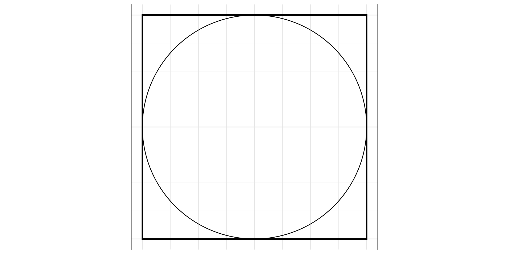Геометрическая вероятность
Будем бросать в этот квадрат точки случайным образом:
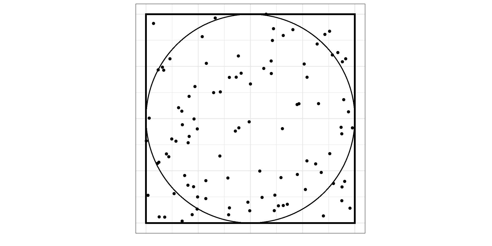Геометрическая вероятность
Вопрос: какова вероятность, что случайно брошенная точка попадет в круг (событие \(A\))?
Набросаем больше точек:
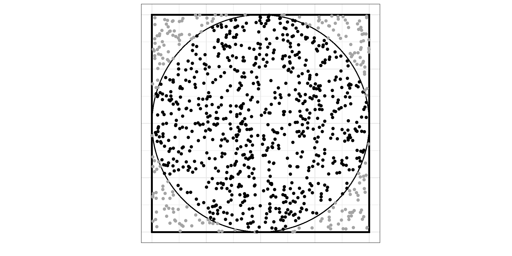Геометрическая вероятность
Вероятность попадания случайно прошенной точки в круг равняется отношению площади круга к площади квадрата, то есть:
\[ \mathbb{P}(A) = \lim_{N \rightarrow \infty} \frac{n}{N} = \frac{S_\text{circle}}{S_\text{square}} \]
Можно расписать точнее, если вспомнить геометрические формулы:
\[ \mathbb{P}(A) = \frac{S_\text{circle}}{S_\text{square}} = \frac{\pi r^2}{a^2} = \frac{\pi \big(\frac{1}{2}a\big)^2}{a^2} = \frac{1}{4}\pi \approx 0.785 \]
Такое подход к определению вероятности называется геометрической вероятностью.
L5.3 // Случайные величины
Случайная величина
Случайная величина — это некоторая переменная, значения которой представляют собой численные исходы некоторого случайного эксперимента.
Формально случайная величина \(\xi\) — это функция \(y = \xi(\omega)\), или \(\xi: \Omega \rightarrow \mathbb{R}\), на вероятностном пространстве \((\Omega, \mathcal A, \mathbb{P})\), которая сопоставляет исходам случайного эксперимента некоторые числа.
Дискретные случайные величины
Случайная величина является дискретной, если множество её значений конечно или счётно.
Это позволяет задать случайную величину с помощью функции вероятности (probability mass function, PMF).
- Множеством определения (domain) — множество значений случайной величины
- Множеством значений (range) — \([0, 1]\)
- Сами значения будут определять вероятность, с которой происходит реализация определенного элементарного исхода соответствующего случайного эксперимента
Снова кубик
- Множество определения — \(\{1, 2, 3, 4, 5, 6\}\)
- Каждое значение выпадает с вероятностью \(\frac{1}{6}\) — множество значений также известно

\[ f(x) = \mathbb{P}(X = x), \]
Свойства функции вероятности
- \(\forall i \in \mathbb{N}\, f(x_i) \geq 0\)
- \(\sum_{i=1}^\infty f(x_i) = 1\)
Функция распределения
Функция распределения (cumulative distribution function, CFD) задается так:
\[ F(x) = \mathbb{P}(X < x), \]
Функция распределения и функция вероятности
\[ F(x) = \sum_{x' \leq x} f(x') \]
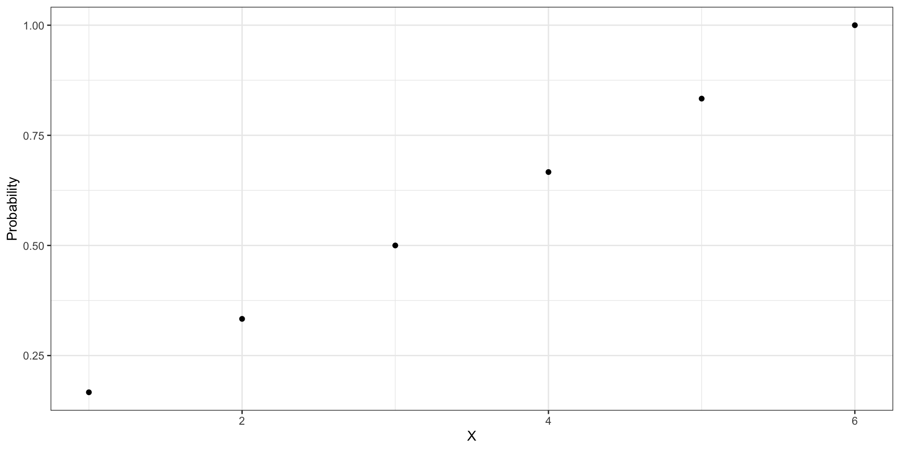Непрерывные случайные величины
Случайная величина является непрерывной, если множество её значений обладает мощностью континуума.
Числа из отрезка
- Набираем числа из отрезка от нуля до единицы \([0, 1]\)
- Вопрос: с какой вероятностью мы сможем вытащить, скажем, число 0.5? или 0.341? или любое другое?
\[ \mathbb{P}(X = x) = \frac{1}{n} = \frac{1}{\infty} = 0 \]
Или более аккуратно:
\[ \mathbb{P}(X = x) = \lim_{n \rightarrow \infty} \frac{1}{n} = 0 \]
???
— Получается, что вероятность вытащить конкретное значение равна нулю?
— Да.
— Значит ли это, что мы не сможем извлечь из отрезка от 0 до 1 ни одного числа?
— Нет.
Особенность непрерывных случайных величин
\[ \mathbb{P}(X = x) = 0, \]
вероятность того, что непрерывная случайная величина примет своё конкретное значение, равна нулю.
Плотность вероятности
Функция вероятности для игрального кубика:
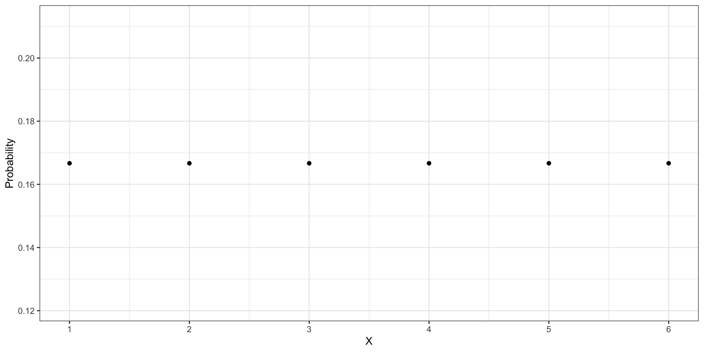
Для нашего отрезка:
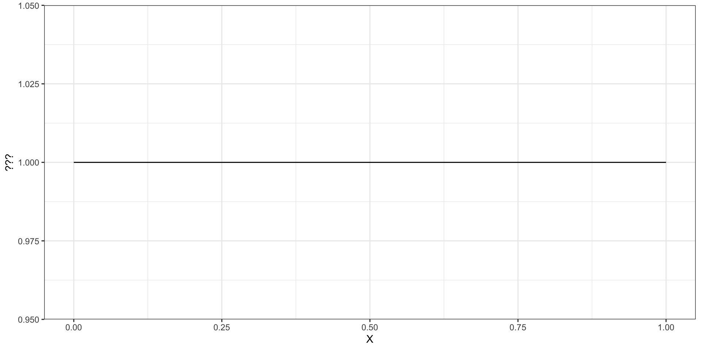
Дискретные vs непрерывные
Чтобы это понять, дайате сравним два графика ниже:
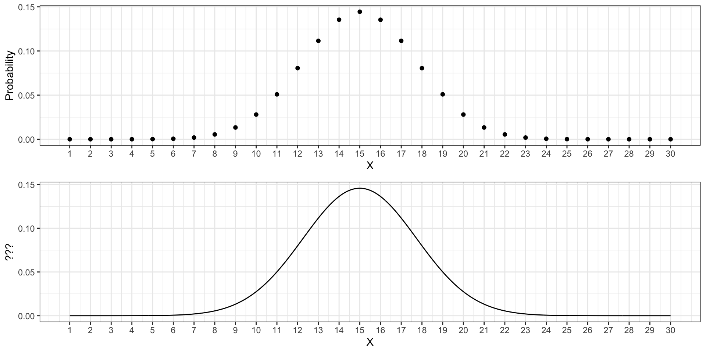Непрерывные случайные величины и интервалы
- возьмем значения 15 и 20
- немного отступим от них вправо — \([15, 15 + \Delta x]\) и \([20, 20 + \Delta x]\)
Плотность вероятности
Формально плотность вероятности случайной величины \(\xi\) — это числовая фукнция \(f(x)\), отношение \(\dfrac{f(x_1)}{f(x_2)}\) значений которой в точках \(x_1\) и \(x_2\) задаёт отношение вероятностей попадания случайной величины \(\xi\) в интервалы \([x_1, x_1 + \Delta x]\) и \([x_2, x_2 + \Delta x]\) при \(\Delta x \rightarrow 0\).
График, который мы рассматривали выше, называется графиком функции плотности вероятности (probability density function, PDF).
Плотность вероятности. Смысл
- позволяет визуально изучать непрервные случайные величины аналогично дискретным
- мы не можем работать с вероятностями отдельных значений, но можем работать с вероятностями интервалов
Вероятность попадания значения случайной величины в интервал \([a, b]\) определяется как интеграл функции плоности вероятности:
\[ \mathbb{P}(a \leq X \leq b) = \int_a^b f(x) dx \]
Нормирование площади
Необходимо потребовать, чтобы вся площадь под графиком была равна единице:
\[ \int_{-\infty}^{+\infty} f(x) dx = 1 \]
Функция распределения непрерывной случайной величины
Из функции плотности вероятности можно построить функцию распределения непрерывной случайной величины (cumulative distribution function, CDF) — это будет первообразная от функции плотности:
\[ F(x) = \int_{-\infty}^x f(t) dt \]
Нормальное распределение
- непрерывное распределение
- задается двумя параметрами — математическим ожиданием и дисперсией
\[ X \thicksim \mathcal N (\mu, \sigma^2), \]
\[ f(x) = \frac{1}{\sigma \sqrt{2\pi}}e^{-\tfrac{(x - \mu)^2}{2\sigma^2}}, \]
\(x \in \mathbb{R}, \, \mu \in \mathbb{R}, \, \sigma \in \mathbb{R}_{>0}\)
Форма нормального распределения
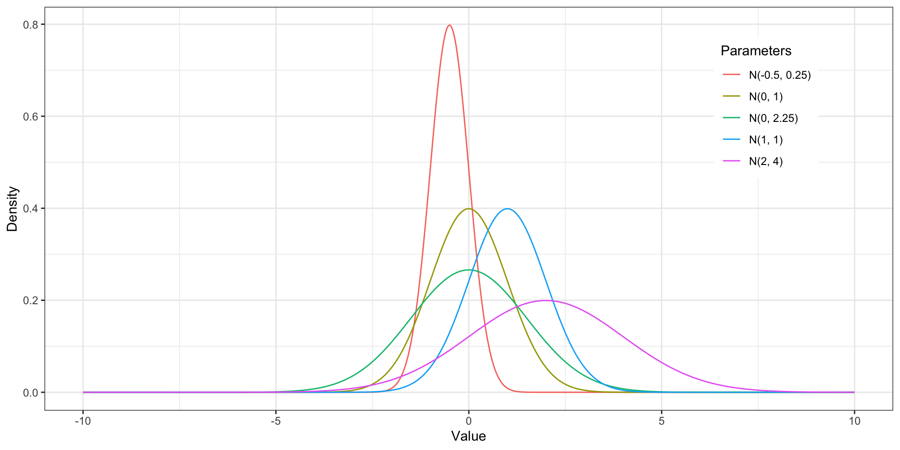Коэффициенты асимметрии и эксцесса
- Любое нормальное распределение симметрично — коэффициент асимметрии равен нулю
- Коэффициент эксцесса зависит от дисперсии
- дисперсия равна единице — коэффициент эксцесса равен нулю
- дисперсия меньше 1 — коэффициент эксцесса положительный
- дисперсия больше 1 — коэффициент эксцесса отрицательный
Стандартное отклонение
\[ \sigma = \sqrt{\sigma^2} \]
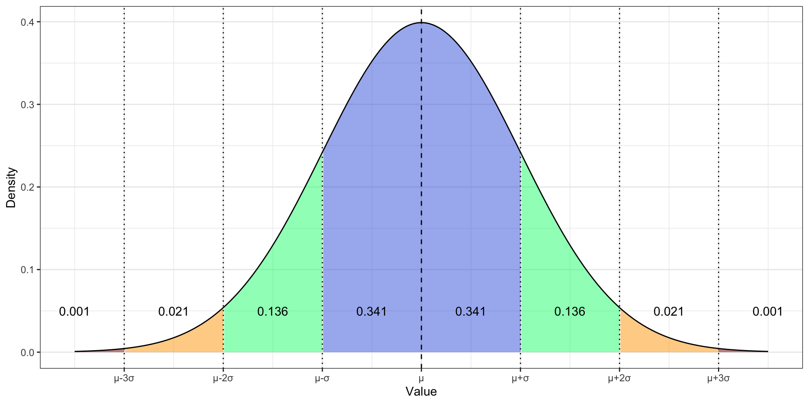- \(\mathbb{P}(X \in (\mu - \sigma, \mu + \sigma)) = 0.682\)
- \(\mathbb{P}(X \in (\mu - 2\sigma, \mu + 2\sigma)) = 0.956\)
- \(\mathbb{P}(X \in (\mu - 3\sigma, \mu + 3\sigma)) = 0.998\)
Итоги
- Выборка должна быть репрезентативной, чтобы исследование не было бессмысленным
- Случайный эксперимент преследует нас всюду
- Дискретные величины просты и понятны
- Непрерывные величины не принимают конкретных значений и требуют плотность
- Нормальное распределение красивое и хорошо изученное
L5 // Введение в статистику. Случайный эксперимент и случайные величины
Антон Ангельгардт
WLM 2023